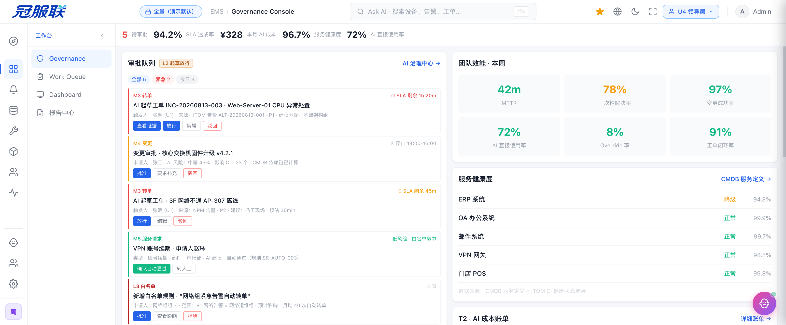
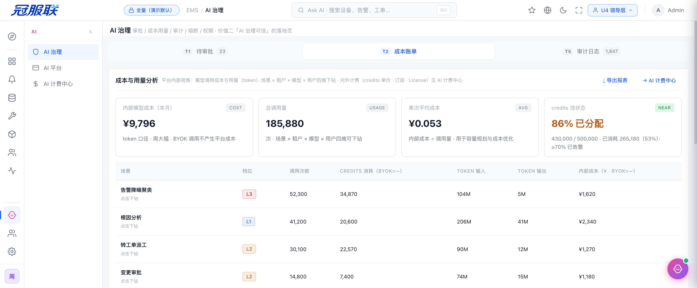
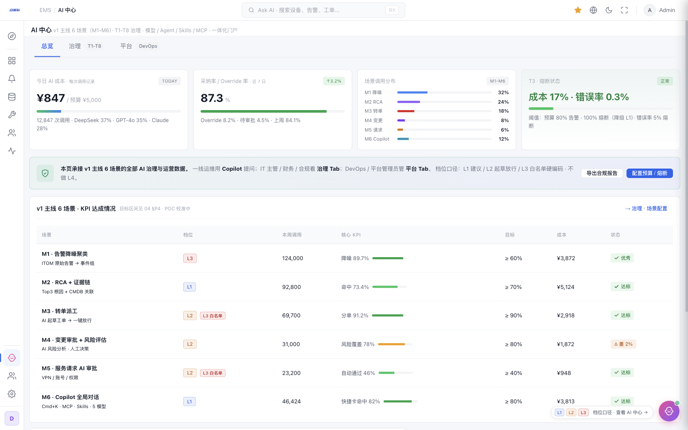
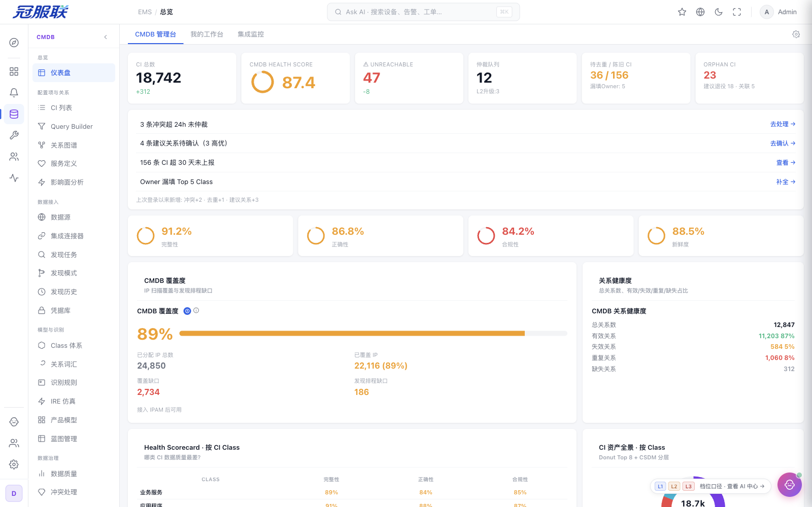

EMS Platform · Product Introduction
2026
产品介绍 · 面向运营商与中大型客户
AI 驱动 EMS
综合运维平台 · 一个平台打通运维闭环
ITOM · CMDB · ITSM · FSM · NPM · ITAM 六大产品域 × AI Copilot——用同样的人力做更多的事，让 AI 在治理可信的前提下走进生产环境。
Work Queue·Governance·Dashboard
AI-Driven EMS · 综合运维平台
— 2026 —
Before EMS · 运维现状
01 / 10
先看一组数字。
人肉接力的日常
告警在 ITOM，影响面在 CMDB，建单在 ITSM，派工在 FSM——一个故障，一场跨系统接力。
System Switching
3-5个
一次故障平均切换的系统数，信息靠复制粘贴
Low-Value Hours
30-50%
一线时间被盯屏 / 建单 / 日报占用（行业推断）
Annual Attrition
15-30%
一线工程师年流失率，SOP 经验随之带走
Overseas Cost
2-4×
海外驻场工程师月成本对比国内（行业调研）
数据为行业推断区间 · 以 POC 实测校准
Act I · The Pain
The Answer · EMS 是什么
02 / 10
Act II · The Answer
一个平台
AI 驱动的工作执行平台
系统告诉你该做什么，AI 在治理约束下帮你做完。三个入口覆盖所有角色——Work Queue 行动、Governance 治理、Dashboard 观察。
Act II · What is EMS
— · —
Value I · 购买动机
03 / 10
价值一 · 倍增一线，解放专家
从盯屏，到决策
17 项高频场景由 AI 辅助完成——值班盯屏、自动建单、智能派工、报告起草；落地为辅助模式，不承诺无人值守。
Frontline Efficiency
×2目标
辅助模式 ×1.5-2.5 效能 · POC 校准
AI Scenarios
17项
S01-S17 高频场景全覆盖 · AI 绑定具体业务
Workforce Optimization
5-15%
一线人力预算可优化区间（保守 → 激进）
Manager Time Recovery
20-30%
变更评审 / 周报复盘时间回收，转投架构与团队
对决策者讲降本 · 对使用者讲解放
Value I
Value III · 结构性差异
04 / 10
价值三 · 一个平台打通闭环
告警到处置，一条链
六大产品域上下文不断——切系统、复制粘贴、人肉接力，在这里结束。
Reactive Chain · 反应性处置链
01
告警触发
ITOM 跨产品聚合 + AI 降噪聚类
02
根因定位
AI RCA · Top3 根因带完整证据链
03
自动转单
L2 起草工单 · 审批卡点放行
04
智能派工
AI 推荐工程师 · FSM 现场闭环
05
全程通知
多渠道自动触达 · 上下文连续跳转
06
闭环沉淀
AI 起草复盘 · SOP 沉淀为组织资产
监控强的不做处置（Datadog），ITSM 强的监控弱（ServiceNow），运营商只卖线路——五产品一体闭环是结构性差异，MTTR 目标降 50%+。
— Why EMS Wins
ITOM → CMDB → ITSM → FSM → NPM → ITAM
Value III · MTTR -50%
Value II · 准入证
05 / 10
价值二 · 让客户敢用
AI 治理可信
没有治理，产品再好客户也不敢买。每一个 AI 动作，都在四层兜底之内。
审批卡点
AI 起草的动作，人审之后才执行——L2/L3 必经 T1 卡点，高风险多人分级审批。
成本账单
每次 AI 调用可核算，日 / 周 / 月账单，按用户 / 租户 / 场景 / 模型四维下钻，多币种。
分级熔断
成本与错误率双阈值，失控自动止损：成本熔断全停，错误率熔断降级为建议模式。
审计追溯
每条 AI 建议附证据链，人工推翻 AI 全程留痕——出了事故，追得到人。
L3 只走硬编码白名单 · 永不自动通过·L4 无人值守明确不做
T1-T8 治理面板 · 中大型档全量
Value II
Product Proof · 产品实证
06 / 10
不是概念，是可交付。
一屏纵览





71 页交互原型，可按真实场景现场演示。
— 预约 Demo
截图来自当前主线原型 · 2026.08
Proof
For Operators · MSP
07 / 10
面向运营商与 MSP
为运营而建
两层客户结构：您运营多个最终客户，EMS 以多租户承载——每租户一个客户，数据隔离、独立核算。
多租户运营
每租户 = 一个最终客户，数据 / 配置 / 报表隔离；管理层跨租户总览，一键切换视角。
Multi-Tenant
AI 二层计费
平台 → 您按批发价结算 Credits；您 → 客户自定转售单价与配额，转售利润分析内置。
AI Billing
品牌化报告
白标客户报告：模板化 / 订阅定时交付 / 导出留痕，按合同周期送到客户手里。
White-label
项目工时贯通
项目 - 资产 - 告警 - 工单 - 派工 - 工时 - 报告七类数据全跳转，工时可核算、服务可结算。
Timesheets
HKT · 信天 · CTE 等同型客户结构
For Operators
Global Ready · 出海
08 / 10
为中企出海而生
跨境即闭环
总部与海外站点共用一套平台——合规与效率，一个都不能少。
多语言
中英双语界面，海外站点的英文工单与报告直接出。
多时区
SLA 按区域基准，AI 起草跨时区交接单，总部兜底海外值守。
多币种
项目 / 合同 / 工时 / AI 账单按币种与区域独立核算。
数据驻留
海外云节点或本地一体机可选，满足 GDPR 与属地存储法规。
NPM 跨境拨测 → ITAM 资产合同定位 → ITSM 建单 → FSM 海外派工，全球备件仓最快 4 小时到场——跨境链路纳入同一条闭环。
— Cross-Border Loop
PIPL × GDPR 双向合规
Global
Commercials · 商业模式
09 / 10
算得清的账
三种计费模式
托管模式
平台模型池开箱即用，AI Credits 全价计费，订阅内含额度池——默认推荐。
BYOK 自带 Key
Token 由客户直付供应商，平台费五折；平台仍全程计量，防滥用、可分账。
私有化一体机
数据不出境，本地调用免 Credits，硬件一次买断——金融与合规严控客户的准入条件。
AI Token 月成本 ≈ 一线工程师月成本的 0.2%-1%；产品订阅费约等于 1-3 名一线工程师的人力成本——90 天 POC，用数据把账算清。
— ROI · CFO 视角
订阅 + AI Credits · 租户级选择 · 场景级混合
Commercials
The Takeaway
10 / 10
留给您的一笔账
同样的团队， 做更多的事。
90 天 POC，用三项硬指标验证：告警首响时间 · 工单闭环耗时 · 单日处理工单数。
预约演示·71 页交互原型现场体验·EMS Platform 2026
AI-Driven EMS · 谢谢
— END —